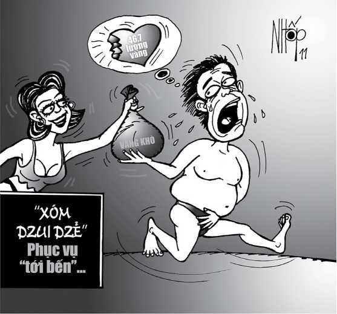

Ngày 1-1-2002 trong đời ông LTĐ, chủ một tiệm vàng ở thị xã Rạch Giá (Kiên Giang), là một ngày xúi quẩy hết biết. Ông cưỡi chiếc xe Suzuki mang theo hai cục vàng khò, cả thảy 46 lượng bảy chỉ, đến thành phố Long Xuyên (An Giang) nhưng lại gặp sự cố.
Hai cục vàng khò (vàng chưa tinh chế) được gói trong giấy báo, để vào trong túi vải, phía ngoài có bọc nylon. Ông Đ lên Long Xuyên để đổi số vàng này ra nữ trang, bán trong dịp Tết 2002. Thế nhưng, khi đến khu vực ấp Hòa Tây B (xã Phú Hòa, Thoại Sơn, An Giang), ông Đ không nỡ... xa nơi này. Ông ghé vào quán của KT uống nước. Khu vực này nằm trên đoạn 10 cây số vui vẻ, yến hót oanh ca, lơ thơ tơ liễu. Nhiều động mại dâm bình dân hoạt động thường xuyên, thường được gọi là xóm Liểu.
Thôi thì cũng nên vui vẻ tý chút. Từ đây qua Long Xuyên chỉ có vài chục cây số, vội vàng chi khách đa tình ơi! Ông Đ bèn gửi chiếc xe cho chủ quán nước KT rồi tìm đến một động cách đó khoảng 50m để... giải sầu. Rủi sao hôm ấy, Công an xã Phú Hòa ra quân chống mại dâm. Các anh truy quét xóm Liểu. Ông chủ Đ bị bắt quả tang đang làm việc “xóa đói giảm nghèo” cho em út, bị đưa về trụ sở công an xã làm việc.
Đây nói về chủ quán KT. Thấy ông Đ bị bắt, KT bèn đem bọc nylon (có đựng 46,7 lượng vàng) của ông để trên bộ ván ngựa nhà mình. KT lại nhờ LTTN dẫn xe của ông Đ gửi qua nhà hàng xóm. Làm xong các việc, KT lên trụ sở công an xã nghe ngóng tình hình, xem họ xử lý ông Đ ra sao.
Riêng TN gửi xe xong, quay trở về thì gặp TTBT. Hai bà thấy bọc đồ để trên bộ ván ngựa (của nhà KT) thì tò mò mở ra coi. Họ tá hỏa tam tinh khi thấy hai cục vàng khò to tổ nái. Phen này thì đại phát tài. Họ bèn tranh nhau chiếm giữ. TN nói dõng dạc: “Tao nhìn thấy trước nên tao có quyền mang hai cục vàng về nhà cất”
Chiều đó, KT về mới biết tin TN và BT tìm thấy vàng trong bọc đồ của ông Đ. Ức lòng, bà chủ quán KT liền đến nhà TN, yêu cầu TN chia cho một cục (không rõ trọng lượng). TN còn lấy dao chặt vàng chia cho BT một miếng. Sáng hôm sau, BT mang miếng vàng đi cân được 1,4 lượng. TN mang cục vàng đi cân được 17,3 lượng, đổi ra vàng nữ trang, chia thêm cho BT ba lượng. Nói chung, nhờ của chùa nên ai cũng phát tài, có phần.
Bị tạm giữ một đêm, sau khi nộp phạt hành chính xong, ông Đ trở lại nhà KT lấy xe thì thấy mất bọc vàng, bèn đi báo công an. KT, TN và BT đều bỏ trốn. Được sự động viên của công an, cả ba ra trình diện, giao nộp nhiều lần tổng cộng được 38,2 lượng vàng và 4,5 triệu đồng.
TN và BT đã trộm cắp của ông Đ 46,7 lượng vàng. Cơ quan điều tra đã thu lại được 38,2 lượng và 4,5 triệu đồng trả cho ông Đ. Phần còn lại là 7,588 lượng vàng chưa thu hồi được. Trước tòa, ông Đ đã thấy rõ lỗi của mình. Ông thú nhận bởi muốn giải sầu nên có hành vi sai trái, chẳng những đã bị phạt hành chính và suýt mất số tài sản lớn, lại càng sầu thêm.

.Ba lần tòa hỏi ông muốn giải quyết thế nào về số vàng bị thất thoát, ông Đ vẫn không yêu cầu các bị cáo trả số vàng ấy lại. Ông nói:
“Thưa quý tòa, tôi hổng dám kêu nài thêm. Coi như là tôi bị xui. Xin cám ơn quý tòa, bảy lượng rưỡi đó như... thí cô hồn”.
Vì vậy, tòa không đề cập đến trách nhiệm dân sự (bồi thường) của các bị cáo. Hú hồn hú vía ông Đ!